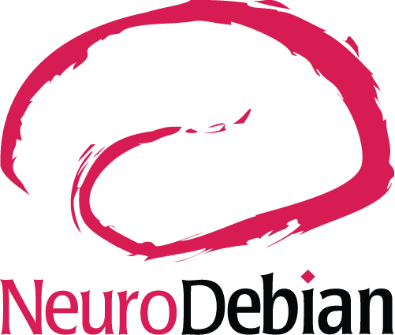
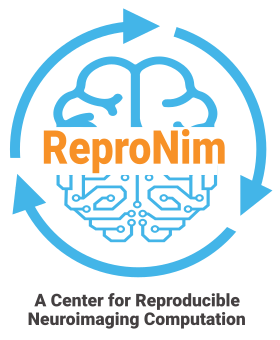
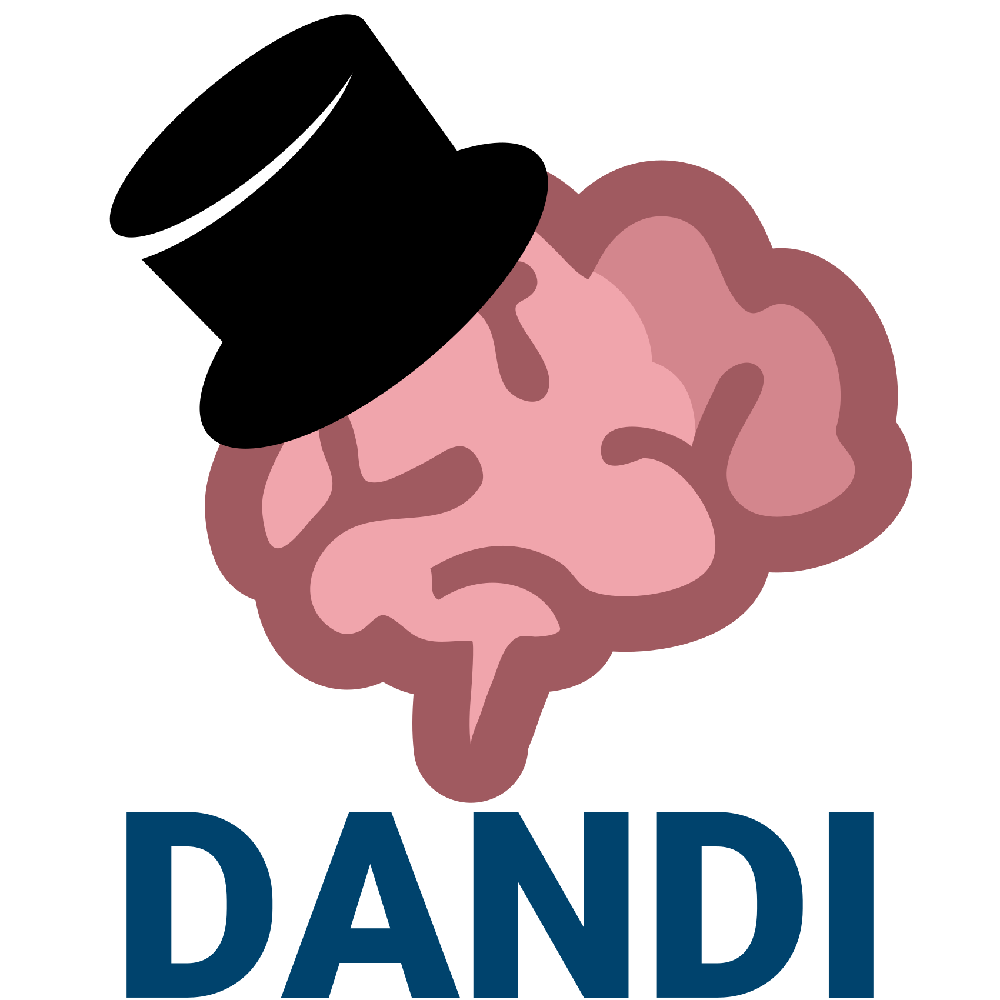
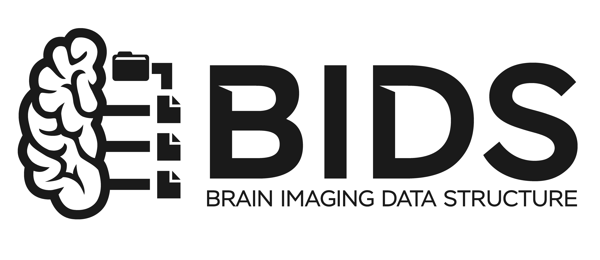
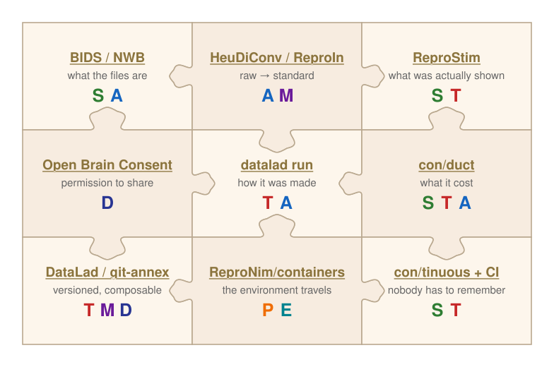

STAMPED principles and their role in the age of
AI-driven scientific software development
Agents often fail not for lack of "intelligence".
They fail for lack of structure to act on.

Early promises and future question
a ReproNim workshop — MIT Building 46, Cambridge MA — October 16th, 2026
Live slides/Sources: https://datasets.datalad.org/centerforopenneuroscience/talks/2026-reproAI-MIT-STAMPED.html




Reality Check

Disclaimer: I am not here to sell you a model, a vendor, or a workflow.
I am here to argue that the boring infrastructure work we have been doing for 20 years
is exactly what decides whether agents help you or hurt you.
Counts and names on these slides are links — follow along, click through later.
Standing on two talks
|
Mine — ReproNim webinar, Feb 2026 ReproFlow & YODA: structure your studies (video: YouTube · ReproTube)
|
Oscar Esteban — OHBM 2026 Educational Using LLMs in Neuroimaging Research: LLMs for Coding
|
This talk is about what the harness stands on — and how harnesses themselves become shareable.
It’s 2026. Agents write the code.
So the bottleneck moved
| writing the code | → | verifying and situating it |
| can I express this? | → | is this right, and does it fit what already exists? |

Without structure, the agent has to guess
What an agent finds in most labs
|
What an agent finds in a BIDS dataset
|
Not just rhetoric: a structured neuroimaging harness moved first-choice tool-selection accuracy from 23.3% to 93.6% across seven models — Chen, …, Poldrack, Bringing analytic rigor to agentic AI for science, arXiv:2608.19902, 2026 (brain-researcher.com).
This problem already has a name

YODA, 2018 — for humans composing studies |
→ |

STAMPED, 2026 — generalized, gradeable, domain-agnostic |
We did not invent these for AI. That is the point — they were already the right properties.
Seven properties a research object should have —
whoever, or whatever, picks it up next.
STAMPED in one table
| Property | In one line | What it buys an agent |
|---|---|---|
| Self-contained | Everything under one boundary | A bounded context window. Nothing it needs is “on Bob’s laptop”. |
| Tracked | Version control & provenance | A diff to review, and a record of who/what produced each change — including the agent. |
| Actionable | Executable & documented workflows | The load-bearing one. A command it can run, not a paragraph it must interpret. |
| Modular | Independent & composable modules | A unit small enough to reason about, swap, and verify in isolation. |
| Portable | Runs anywhere with explicit specs | The agent’s sandbox is not your laptop. If it only runs on your laptop, it does not run. |
| Ephemeral | Transient compute environment | Throw-away containers — exactly how agents already work. No accreted state to corrupt. |
| Distributable | Shareable, persistent, retrievable | It can get the inputs itself instead of asking you for a Dropbox link. |
A. Macdonald, C. Baker, I. To, Y. O. Halchenko. STAMPED: principles for reproducible research objects. Preprint, 2026. doi: 10.31222/osf.io/f3h82_v1 · sources: stamped-principles/stamped-paper · paper.stamped-principles.org
Actionability is the one that agents live or die on
An actionable object answers, without a human in the loop:
“You’ve seen one BIDS dataset, you’ve seen them all” was a convenience for humans. For a model that would otherwise have to infer the layout, it is the difference between acting and hallucinating.
“All standards are ‘bad’, but some are used.” — D. Clunie, MICCAI 2017. A used standard beats a correct one — and now it has a second constituency.
… and AI changed what counts as actionable
| “Actionable” required… | … so what could act | |
|---|---|---|
| Before | An exact command, API call, or documented CLI. Prose was not enough. | Tools, and humans who already knew the tool. Everything else stayed a paragraph in the Methods. |
| Now | A procedure described in human language — with scripts dropped in exactly where precision matters. | Any agent, on first contact. The interface moved from syntax to language, so vastly more of what we already wrote down became executable. |
| Next | Routines that fire without being asked. | The harness itself — CI, PR monitors, scheduled agents. |
1. Skills — logic written in language
|
2. Routines — the harness runs them for you
|
→ Michelle already showed you this middle row working. My claim is about why it works now and did not five years ago: the unit of automation stopped being a CLI and became a described procedure.
So grade them too: a skill is a research object
A skill that only runs in your repo, on your paths, undocumented and unversioned, is a silo with a friendlier interface.
| Property | … applied to a skill or an automation |
|---|---|
| Self-contained | Carries its own references and scripts. Not “see our internal wiki”. |
| Tracked | In git, with a metadata.version and a history — so a change to the procedure is reviewable. |
| Actionable | Runnable commands and scripts, not only prose. Recursive, and the point. |
| Modular | One skill, one job. Composable with the others instead of a mega-prompt. |
| Portable | No hardcoded paths, no “works on our cluster”. Declares its dependencies and versions. |
| Ephemeral | Runs in a fresh sandbox. No accreted state it silently depends on. |
| Distributable | Published where someone else can find and install it — not pasted into chat. |
Walk it yourself: checklist.stamped-principles.org
(MUST / SHOULD / MAY, item by item) ·
examples ·
principles ·
paper source
(main.tex
— small enough to paste into a context window, which is how we actually grade a study today).
→ Johanna is up next with a concrete pattern for exactly this. My ask is that whatever such a workflow writes down about itself be gradeable by this table.
What we built to make this real
Twenty years of it, in neuroimaging, before anyone said “agent”.
Nobody ships you a STAMPED object — each tool brings a piece

Standards are the grammar — BIDS as the worked example

datalad run → duct:
what it is → how it was made → what it took.
Three layers, and an agent needs all three.
Tracked: datalad run writes the record for you
$ datalad run -m "run brain extract workflow" \
--input "inputs/ds*/sub-01/anat/sub-01_T1w.nii.gz" \
--output "sub-*/anat" \
bash -e code/brain_extraction.sh inputs/ds*/sub-01/anat/sub-01_T1w.nii.gz$ git show --stat
commit 1223bc4bead3c7e6be15b78546c894c6465dd7a4
[DATALAD RUNCMD] run brain extract workflow
=== Do not change lines below ===
{
"cmd": "bash -e code/brain_extraction.sh inputs/ds000001/sub-01/anat/sub-01_T1w.nii.gz ...",
"dsid": "b656ac80-973c-45ef-887e-1b8d6f6a51dd",
"exit": 0,
"inputs": ["inputs/ds*/sub-01/anat/sub-01_T1w.nii.gz"],
"outputs": ["sub-*/anat"],
"pwd": "."
}
^^^ Do not change lines above ^^^
sub-001/anat.nii.gz | 1 +
sub-001/anat_mask.nii.gz | 1 +- Machine-readable, in the commit message — no sidecar database to lose
- Clean git state in, clean git state out: no surprises
datalad rerunreads it back and re-executes
Example from the DataLad Handbook. Found in the wild in ~15% of indexed DataLad repositories on GitHub.
→ JB’s analytical flexibility is an opportunity only if you can still say, a year later, which variant produced this figure. That sentence is the record above.
Provenance does not care who wrote the code
Agent-written or hand-written, the [DATALAD RUNCMD] record is the same shape.
The tests do not know the code was AI-generated either.
The missing piece: con/duct

stdout/stderr — as plain, self-contained files.
… and that log is the provenance you need later
“Why did this get OOM-killed on the cluster?”
|

|
duct turns “it crashed, I think it ran out of memory” into a file.
Self-contained (S), tracked (T), immediately actionable (A).
Already wired in: set REPRONIM_USE_DUCT=1 with
///repronim/containers
and every datalad containers-run gets a duct trace for free.
All three layers, one real artifact — built with AI
dandi/compression-comparisons-t261-study
— a reproduction of
Buccino et al. 2023 on ephys compression,
plus a comparison against the new ITU-T T.261 codec.
1. The layout (what)
BIDS-shaped, YODA-composed: data and tool are subdatasets pinned by commit, not copies. |
2. The record (how) — and 3. the cost (what it took)
The recorded command is a |
| commits | [DATALAD RUNCMD] |
of those, wrapping duct |
cells | recorded compute | AI disclosure |
|---|---|---|---|---|---|
| 1265 | 1216 | 1095 | 912, 0 errors | 3838 h (peak RSS 120 GB) | 26 Co-Authored-By: Claude |
So I tried to rerun it. Live, on this laptop.
|
Did the science come back?
Different machine, different kernel, six weeks later — every scientific number came back bit-for-bit. Only timings and the environment record moved. |
So what do we build next?
Not more code. Harnesses and skills.
Agent = Model + Harness
formulation borrowed from Oscar Esteban, OHBM 2026
| Harness piece | What it is | STAMPED property |
|---|---|---|
AGENTS.md / CLAUDE.md |
The project’s operational contract: conventions, commands, what not to do | Self-contained |
| Skills | A named, reusable procedure with its own references and scripts | Modular, Actionable |
| Hooks / CI | Guard rails that run whether or not anyone remembered to | Tracked |
| MCP servers | The port to external systems — archives, trackers, databases | Distributable |
| Container / sandbox (con/yolo) |
Where it may run and how much it can break — and the one piece that enforces self-containment: what you did not declare is not in there | Self-contained, Portable, Ephemeral |
| Pre-flight check | Credentials, access and inputs verified before the run starts — fail in the first second, not in hour three | Actionable, Ephemeral |
→ Brent set up the Model half this morning. Satra builds out the Harness half right after me, with knowledge graphs underneath it — treat this act as the setup for that talk.
Where are you on the ladder?

Ladder figure & framing: Jo Van Eyck, “You are Not Ready: Agentic coding in 2026” |
L4–L5 is exactly where a bad harness stops being survivable —
which is why the harness, not the model, is the thing to invest in.
|
And the loop that gets you up it
|
%%{init: {'theme': 'base', 'themeVariables': {'fontSize': '17px'}}}%%
flowchart TD
IDEA["Idea"] --> S1["1. Overall design / spec"]
S1 --> S2["2. Aspect design / prompt"]
S2 --> S3["3. AI work"]
S3 --> S4["4. Review / test"]
S4 -->|"iterate"| S2
S4 --> S5["5. Compound into spec / SKILL"]
S5 -->|"next aspect"| S2
S5 -->|"adjust / memorize"| S1
style IDEA fill:#9c27b0,color:#fff,stroke:#7b1fa2,stroke-width:2px
style S1 fill:#1565c0,color:#fff,stroke:#0d47a1,stroke-width:2px
style S2 fill:#2e7d32,color:#fff,stroke:#1b5e20,stroke-width:2px
style S3 fill:#e65100,color:#fff,stroke:#bf360c,stroke-width:2px
style S4 fill:#c62828,color:#fff,stroke:#b71c1c,stroke-width:2px
style S5 fill:#283593,color:#fff,stroke:#1a237e,stroke-width:3px
|
Stage 5 is where a skill is born.
Vibe coding throws the lesson away; compound engineering writes it down —
and what it writes down is exactly the artifact we just said must be STAMPED.
Tooling for stage 1: spec-kit · OpenSpec · compound-engineering · LAD (in use in dandi-cli) → Johanna, next: a pattern that does stage 5 on purpose, so each run leaves the workflow better than it found it. |
That was the individual ladder. Here is the team one.

Figure reproduced from: E. C. Johnson, T. T. Nguyen, B. K. Dichter, …, M. E. Martone, F. Pestilli, D. Yatsenko. SciOps: Achieving Productivity and Reliability in Data-Intensive Research. arXiv:2401.00077, 2024.
L5 presupposes L3 underneath it. You do not get closed-loop discovery on top of
study_final2/.
Right now, everyone is rebuilding the same private harness
A hundred labs, each writing their own “how to work with BIDS” prompt.
None of them shared. None of them versioned. None of them tested.
We have seen this failure mode before. It was called
“every lab has its own analysis scripts”, and we fixed it with standards and packages.
We are already doing this — upstream, in public
K-Dense-AI/scientific-agent-skills — 177 scientific skills, Agent Skills spec, MIT-licensed, scanned and reviewed.
| Contribution | Who | What it carries |
|---|---|---|
skills/bidsPR #125 — merged |
ours (CON) | Entity grammar & 35 entities · the machine-readable schema shipped as a reference · all 25 BEPs · HeuDiConv/ReproIn/dcm2bids/BIDScoin conversion paths · validation · derivatives & BIDS-Apps |
skills/dataladPR #227 — merged |
Dylan Pulver, with our upstream review |
Clone/get semantics & the “pointers are not data” failure ·
datalad run / rerun / containers-run as the provenance spine ·
publishing to siblings · STAMPED landed in
references/provenance.md on our suggestion |
| PR #265 — open | Brent McPherson (McGill) |
Maps all seven STAMPED properties onto concrete DataLad commands,
plus a read-only evidence probe per property
(datalad subdatasets -r for S/M, git log --grep '[DATALAD RUNCMD]' for T,
datalad rerun --report for A, datalad siblings for D…) |
| issue #217 — closed | ours (CON) | “Should STAMPED be its own skill?” — and the still-open question underneath: where should domain skills live? An upstream monorepo, or the project’s own repo, with discovery on top? |
Note the shape: a community member wrote the DataLad skill, we reviewed it, and a third party then extended it with STAMPED. That is exactly how a standard spreads — and it is now happening to harnesses.
And domain-agnostic ones: con/skills
| Skill | What it automates |
|---|---|
| introduce-reuse-compliance | SPDX / REUSE licensing metadata — including for BIDS datasets |
| credit-contributions | CRediT author-contribution statements from git history |
| tinuous-analyzer | CI-failure investigation across archived con/tinuous logs |
| bisect-and-patch-git-annex | Bisect a git-annex regression from CI logs and produce a red/green PR |
| issue-triage · pr-feedback-review | Triage and review work, cross-referenced against the codebase |
| introduce-codespell · introduce-intuit-auto | Bootstrap spell-checking / automated releases into any project |
Deeper dive on the workflow around these: “A few words of intro into AI assisted coding” (CA Origami Retreat, 2026) — also in the appendix of this deck.
Two regimes — and be honest about which one you are in
Either the system checks itself against goals and spec — or the work items stay small enough that a human still can.
|
A. Scaffolded self-verification the agentic system keeps itself in sync
Only then are large autonomous batches defensible.
|
B. Small, human-reviewable, hand-tried where almost every research project actually is
Not a lesser mode — the correct default until A is actually built.
|
“Well, less is more” — Robert Browning, Andrea del Sarto, 1855; later the motto of Mies van der Rohe, who credited his mentor Peter Behrens rather than claiming it.
We are not the only ones saying this
| Source | What it found / argues |
|---|---|
| DORA 2025 (Google Cloud) | Higher AI adoption raises throughput and delivery instability. Their prescription is literally regime A+B: “working in small batches is a critical countermeasure to the risks of AI-assisted development”, plus test automation and fast feedback — because “verification is a fundamentally different cognitive task than creation”. |
| METR RCT, 2025 | 16 experienced OSS developers, 246 real issues, on repos they already maintained: 19% slower with AI tools — while estimating they had been 20% faster. The perception gap is the hazard, not the tooling. (METR now labels this historical — tools moved on. The gap is the durable lesson.) |
| Addy Osmani | “Proof over vibes.” Verification, not authoring, is the bottleneck; break agent output into digestible commits; no PR without tests or a demo; humans stay non-negotiable for security and architecture. |
| Simon Willison ▶ Pragmatic Summit talk ▶ Lenny’s Podcast |
“Your job is to deliver code you have proven to work.” The skill is instructing and then confidently verifying; a model cannot take accountability, you can. And on regime B specifically — even with tests, he reports that “I haven’t used it yet” still undermines his confidence in a change. Trying it by hand is not superstition. |
| Faros telemetry (~22k devs) | PR size +51%, median time in review +441%, incidents per PR +243%. Big agent diffs do not get reviewed — they get waved through. |
HI ↔ AI — every project picks its own policy
Rows 1–2 live in regime B; rows 3–4 are only honest once regime A is actually built.
| Stance | OSS exemplars | CON / adjacent example | Leans on |
|---|---|---|---|
| Reject AI-generated content | Zig, Krita, Clojure, QEMU | git-annex upstream — pure-HI commits | AI stays ephemeral; never enters the tracked artifact |
| Accept with disclosure | NumPy, Kubernetes, Linux kernel, Django | DataLad, DANDI —
Co-Authored-By: Claude… trailers, @pytest.mark.ai_generated |
Tracking — provenance is non-negotiable |
| Spec-driven AI-generated (HI specs, AI writes, HI reviews) |
Common in practice; rarely a declared policy | AnnexTube, citations-collector, parts of dandi-cli | T + A + M — the spec is the contract |
| Autonomous agents in the loop | Brain Researcher (Poldrack lab) — agentic neuroimaging analysis; K-Dense AI — “AI co-scientists” (and the host of the skills library we contribute to) | con/skills + con/yolo for triage, review, dep updates | All of STAMPED — the harness becomes the type-checker |
Common ground, all four: AI cannot be an author (ICMJE, Jan 2026); humans retain full responsibility; AI use is disclosed inside the artifact. STAMPED Tracking is what makes that mechanical rather than a promise.
Catalog of declared OSS stances: melissawm/open-source-ai-contribution-policies. — Note what the row-4 exemplars are: harnesses. Brain Researcher constrains the agent to acceptable analyses and required validations rather than trusting it — autonomy is bought with structure, not with a bigger model.
Take home — what to do Monday
- Make one object actionable. Pick one study. Put it in a declared standard (BIDS, NWB) and run the validator. The agent gets a grammar; you get a type-checker.
- Record one command. Wrap your next analysis step in
datalad run— or at minimum induct. A provenance record you did not have to remember to write. - Grade one thing against STAMPED. checklist.stamped-principles.org, fifteen minutes, and you will know which property is your weakest.
- Write down your harness. An
AGENTS.mdin the repo beats a prompt in your notes app. Declare your AI policy there while you are at it. - Size the work to the loop you actually have. Until the project self-checks, keep AI-assisted items small, reviewable, and tried by your own hand — and say so out loud, so nobody mistakes regime B for regime A.
- Push one skill upstream. The next person who needs your procedure should
cloneit, not re-derive it. scientific-agent-skills, con/skills, or your own repo — but somewhere public.
Acknowledgements
Thank you!
Structure your objects, and
let both intelligences work on them
stamped-principles.org · checklist · examples · con/skills · con/duct
Appendix
Material cut for time — press ↓ to walk it, or follow the links.
STAMPED and FAIR do different jobs
| FAIR | STAMPED |
|---|---|
| About sharing: can someone else find this and get it? | About the object being operational on its own: can someone — or something — re-run it? |
A FAIR dataset can still be a .zip of .mat files with a DOI. |
A STAMPED object carries its own layout, environment, and execution record. |
| Graded by a repository. | Graded by a checklist you can walk, item by item. |
Portable + Ephemeral: the environment travels with the record
|

ReproNim/containers — auto-rebuilt, versioned collection |
“Depend on where you run, you should not.” An agent’s sandbox is not your laptop — which makes portability a correctness property, not a courtesy.